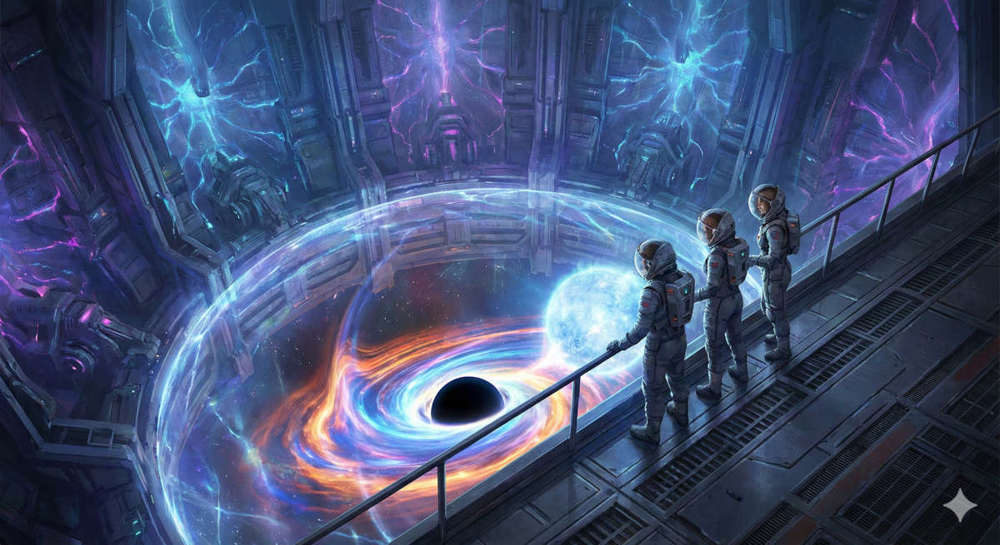
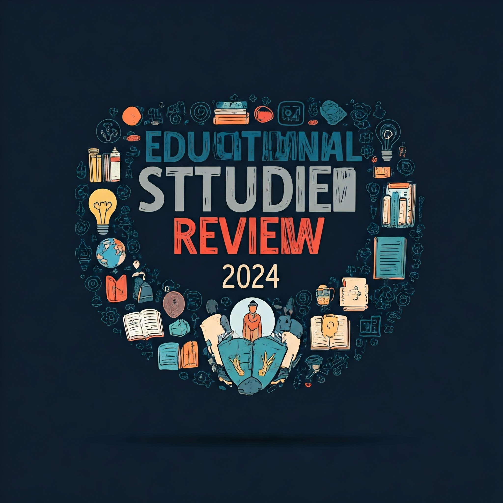
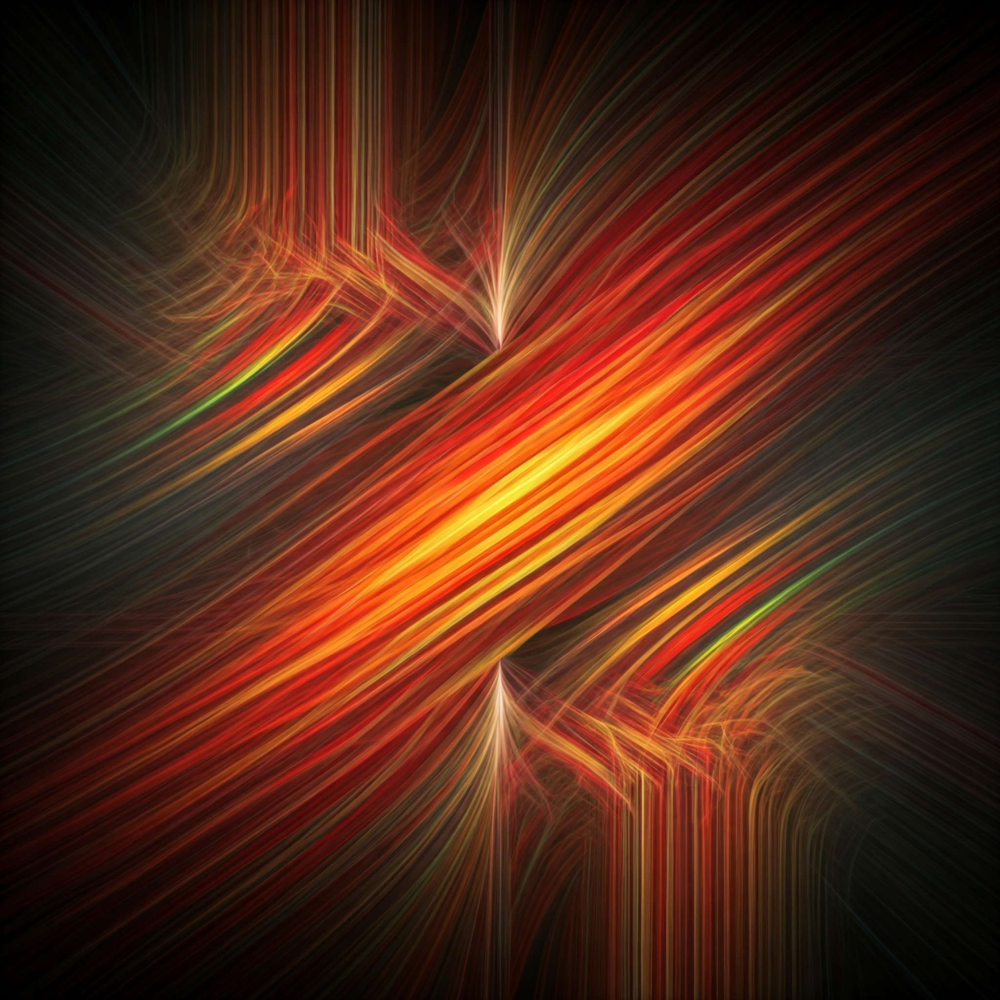
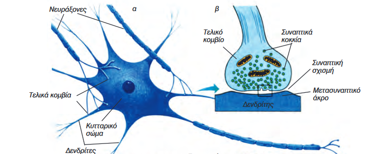
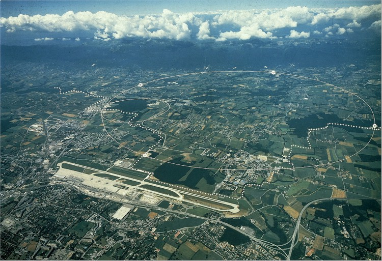
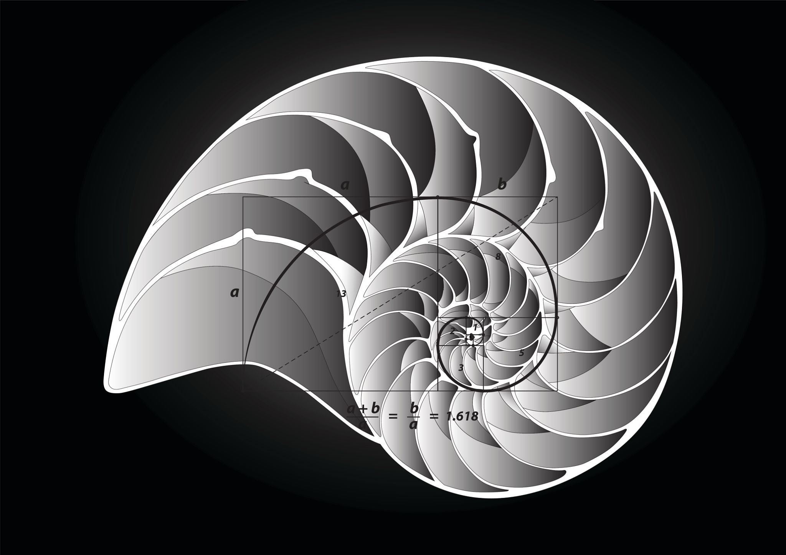
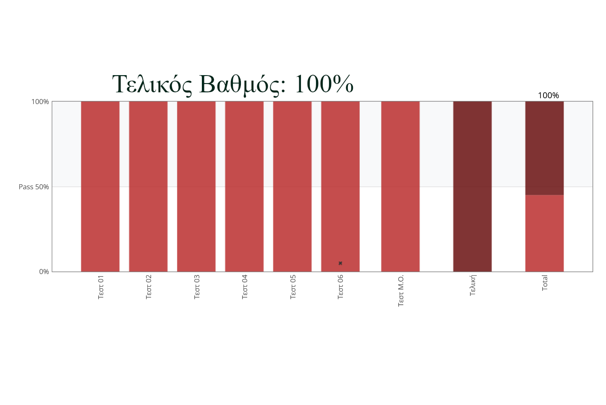
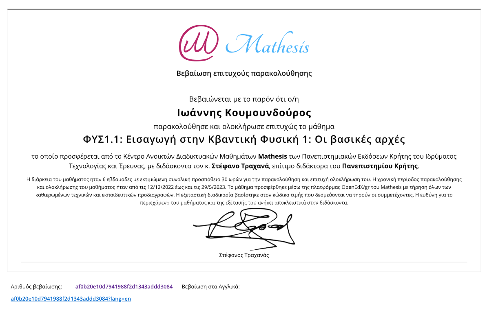

Σημειώσεις, Βοηθήματα
Μαθηματικών, Φυσικής και Χημείας, 13 Δεκ, 2023
Γιατί οι σωστές σημειώσεις μπορούν να βοηθήσουν...
Είναι αλήθεια ότι οι καλές σημειώσεις μπορούν να βοηθήσουν τους μαθητές πολύπλευρα. Οι σημειώσεις που είναι ευπαρουσίαστες με σωστά σχεδιασμένο περιεχόμενο προδιαθέτουν ευνοϊκά τον μαθητή ή την μαθήτρια απέναντι στο μάθημα και επεξηγούν στοχευμένα τα δυσνόητα σημεία ώστε παράλληλα με την δια ζώσης διδασκαλία και το σχολικό βιβλίο ο μαθητής να κερδίζει συνεχώς έδαφος στο γνωστικό και ψυχολογικό τομέα.
Στον σύνδεσμο που ακολουθεί θα βρείτε σημειώσεις και βοηθήματα για τις τάξεις του Γυμνασίου και του Λυκείου που μπορείτε να "κατεβάσετε" ελεύθερα.
Κουμουνδούρος Γιάννης
Η Μοναξιά του Άτλαντα: Η Παγίδα της Εξίσωσης
Εκπαιδευτικό Δοκίμιο, 27 Ιαν, 2026
Το παρόν άρθρο αναλύει το κοινωνικό και διοικητικό παράδοξο της εγκατάλειψης των «ικανών» ατόμων υπό το πρόσχημα της υποστήριξης των αδυνάτων, φαινόμενο που περιγράφεται ως «Η Μοναξιά του Άτλαντα». Εξετάζονται οι ψυχολογικοί μηχανισμοί που συντηρούν αυτή την πρακτική, όπως το «κενό ενσυναίσθησης» και η εργαλειοποίηση της ικανότητας, καθώς και οι μακροπρόθεσμες συστημικές συνέπειες, όπως η οπλοποιημένη ανικανότητα και η εξουθένωση του ανθρώπινου κεφαλαίου. Ως λύση προτείνεται το μοντέλο της «Ασύμμετρης Ηγεσίας», μια στρατηγική που διαφοροποιεί την προσέγγιση ανάλογα με τις ανάγκες: παρέχει «σκαλωσιά» (scaffolding) και ασφάλεια στους αδύναμους, ενώ προσφέρει πρόκληση και τροφοδοσία (fueling) στους ισχυρούς. Η θεωρητική ανάλυση εφαρμόζεται πρακτικά μέσω της μελέτης της περίπτωσης (case study) δύο διδύμων αδερφών και ενός προτύπου διαφοροποιημένης διδασκαλίας («Μέθοδος Σάντουιτς») στα Μαθηματικά, αναδεικνύοντας την ανάγκη για δίκαιη αξιολόγηση που σέβεται τη διαφορετικότητα των δυνατοτήτων.
Κουμουνδούρος Γιάννης
Η Επιστροφή των Ηρώων: Μια μάχη με τον Χρόνο
Εκπαιδευτικό Διήγημα, 2 Δεκ, 2025

Θα θυσίαζες 40 χρόνια από τη ζωή σου για να δεις την άκρη του Σύμπαντος; Τρεις έφηβοι τολμούν το αδιανόητο: ένα ταξίδι στον Κρόνο Β, μια γιγαντιαία Μελανή Οπή 19 έτη φωτός μακριά. Αλλά εκεί έξω, ο χρόνος δεν συγχωρεί. Μια ιστορία για τη Σχετικότητα, τις Σκουληκότρυπες και το τίμημα που πληρώνουμε για να αγγίξουμε τα άστρα. Θα καταφέρουν να γυρίσουν πίσω πριν ο κόσμος τους ξεχάσει;
Κουμουνδούρος Γιάννης
Ενίσχυση Ψυχοσυναισθηματικής Υγείας και Νοητικών Ικανοτήτων στον Μαθητή
Εκπαίδευση, 12 Οκτ, 2025
Αυτό το άρθρο-οδηγός παρουσιάζει 21 ολιστικές στρατηγικές για την ενίσχυση του μαθητή. Εστιάζει στη θεμελίωση της ψυχοσυναισθηματικής ασφάλειας (ασφαλές περιβάλλον, διαχείριση άγχους και ματαίωσης) ως βάση για τη νοητική ανάπτυξη. Παρέχει πρακτικά εργαλεία για την ενδυνάμωση των εκτελεστικών λειτουργιών (αυτοοργάνωση, κατάτμηση, μνημονικές τεχνικές, κριτική σκέψη) και την καλλιέργεια της αυτονομίας και της ανθεκτικότητας. Τονίζεται η σημασία του τρόπου ζωής (άθληση, έλεγχος οθόνης) και της συνεκτικής συνεργασίας μεταξύ οικογένειας και σχολείου για τη δημιουργία ενός ολοκληρωμένου πλαισίου επιτυχίας.
Κουμουνδούρος Γιάννης
Εκπαιδευτική Πρωτοχρονιά 2024
Εκπαίδευση, 12 Δεκ, 2024

Ζούμε σε μια εποχή όπου η εκπαίδευση βρίσκεται σε συνεχή εξέλιξη. Οι ραγδαίες τεχνολογικές εξελίξεις, οι μεταβαλλόμενες κοινωνικές συνθήκες και οι νέες επιστημονικές ανακαλύψεις αναδιαμορφώνουν τον τρόπο με τον οποίο μαθαίνουμε και διδάσκουμε. Το 2024, μια σειρά από μελέτες έρχονται να αναδείξουν καινοτόμες προσεγγίσεις που υπόσχονται να μεταμορφώσουν την εκπαιδευτική διαδικασία.
Κουμουνδούρος Γιάννης
Η Ενίσχυση της Προσοχής
Εκπαίδευση, 10 Δεκ, 2024

Η συγκέντρωση, αυτή η πολυπόθητη ικανότητα να εστιάζουμε σε ένα σημείο, να εμβαθύνουμε σε μια σκέψη ή μια δραστηριότητα και να διατηρούμε για μεγάλο χρονικό διάστημα αυτή την ικανότητα μοιάζει όλο και πιο πολυτελής σε έναν κόσμο που μας βομβαρδίζει συνεχώς με ερεθίσματα. Από τα smartphones μέχρι τα social media, οι αποσπάσεις είναι παντού γύρω μας, κάνοντας την προσπάθεια να διατηρήσουμε την προσοχή μας μια πραγματική πρόκληση.
Κουμουνδούρος Γιάννης
Τεχνητή Νοημοσύνη, ο βοηθός του ανθρώπου
Εκπαίδευση, 8 Δεκ, 2024
Φαντάσου έναν κόσμο όπου τα μηχανήματα μπορούν να σκεφτούν και να μαθαίνουν σαν εμάς! Η Τεχνητή Νοημοσύνη είναι η επιστήμη που κάνει αυτό το όνειρο πραγματικότητα και κάθε άνθρωπος θα έχει τον βοηθό του. Από τα smartphones μέχρι τα αυτοκίνητα που οδηγούν μόνα τους, η ΤΝ είναι παντού γύρω μας και αλλάζει τον κόσμο μας με γοργούς ρυθμούς, ανοίγει δρόμους στην επιστήμη, την ιατρική, την τεχνολογία, την εκπαίδευση και την κοινωνία.
Κουμουνδούρος Γιάννης
Η διαλειμματική επανάληψη και το πνεύμα της άσκησης
Εκπαίδευση, 28 Απρ, 2024

Μία απατηλή αίσθηση μεταξύ των διδασκομένων, στην οποία έχουμε όλοι υποπέσει, είναι το "μαθαίνω μία και έξω!" χωρίς την χρήση της επαναληπτικής μεθόδου που είναι τόσο κουραστική. Η μάθηση συνίσταται στο να δημιουργήσεις μία σύνδεση μεταξύ της νέας πληροφορίας και αυτών των πληροφοριών που είναι μόνιμα αποθηκευμένες στην μνήμη μας. Η νέα πληροφορία πρέπει να περάσει από την βραχυπρόθεσμη μνήμη στην μνήμη μακράς διαρκείας. Για να αποθηκευτεί μακροπρόθεσμα αλλά και να διατηρηθεί αυτή η πληροφορία στην μνήμη μας μπορούμε να χρησιμοποιήσουμε την επαναληπτική μέθοδο και μάλιστα στην αποδοτικότερή της μορφή που ονομάζεται διαλειμματική μάθηση.
Κουμουνδούρος Γιάννης
Το σύστημα πρόσβασης στην τριτοβάθμια εκπαίδευση 2026
Πανελλαδικές 2026, 16 Οκτ, 2026
Το εκπαιδευτικό σύστημα άλλαξε σχετικά με τον αριθμό των μαθημάτων, τις νέες κατευθύνσεις και τον τρόπο υπολογισμού των μορίων για την εισαγωγή στην τριτοβάθμια εκπαίδευση. Στην Γ' Λυκείου έχουμε,
- τρεις ομάδες προσανατολισμού,
- τέσσερα επιστημονικά πεδία,
- σχολές ανά επιστημονικό πεδίο,
- τέσσερα πανελλαδικά εξεταζόμενα μαθήματα,
- ελάχιστη βάση εισαγωγής,
- συντελεστές βαρύτητας,
- παράλληλο μηχανογραφικό,
- πρόγραμμα πανελλαδικών 2024
- εξεταστέα ύλη πανελλαδικών 2024
- βάσεις 2023 και άλλα στατιστικά στοιχεία
Κουμουνδούρος Γιάννης
Οδηγός Σπουδών ΓΕΛ 2024
Εκπαίδευση, 28 Σεπτ, 2023

Για τους μαθητές και τις μαθήτριες που ξεκινάνε την μαθητική τους ζωή στην Α' Τάξη του Γενικού Ημερήσιου Λυκείου και θέλουν να μάθουν πώς λειτουργεί το Λύκειο. Γιατί η έγκυρη και η εκ των προτέρων ενημέρωση κατά την είσοδό σας στο Λύκειο θα διευκολύνει την μαθητική σας ζωή και την λήψη των σωστών επιλογών σας. Καλύπτονται τα παρακάτω θέματα:
- διδασκόμενα μαθήματα,
- γραπτώς εξεταζόμενα μαθήματα,
- ομάδες προσανατολισμού
- τρόπος εξέτασης και βαθμολόγησης των μαθητών
- τράπεζα θεμάτων
- προαγωγικές εξετάσεις
- μέθοδος υπολογισμού του βαθμού
- αργίες, εκδρομές, περίπατοι, απουσίες κτλ.
Κουμουνδούρος Γιάννης
Ο ζωολογικός κήπος των υποατομικών σωματιδίων
Πυρηνική Φυσική, 1 Μαΐου, 2024

Η ατομική δομή της ύλης συνίσταται στο γεγονός ότι η ύλη αποτελείται από διακριτά θεμελιώδη σωμάτια τα οποία δεν τέμνονται περισσότερο και μεταξύ τους υπάρχει κενό. Σαν φιλοσοφική ιδέα ξεκίνησε από τον Λεύκιππο και τον Δημόκριτο (4ος αιώνας π.Χ.). Για πολλούς αιώνες ξεχάστηκε και αναβίωσε στις αρχές του 19ου αιώνα από τον Ντάλτον (Dalton). Στις αρχές του 20ου αιώνα οι ανακαλύψεις ήταν ραγδαίες με πολύ σημαντικά πειράματα, με αποτέλεσμα να θεμελιωθεί η σύγχρονη φυσική. Σήμερα γνωρίζουμε ότι η ύλη αποτελείται από τουλάχιστον 12 σωμάτια ύλης και άλλα τόσα αντισωμάτια που αποτελούν την αντιύλη. Αλλά ας δούμε τα πράγματα πιο αναλυτικά...
Κουμουνδούρος Γιάννης
Η Γέννηση του Ήλιου μας
Αστροφυσική, 28 Σεπτ, 2023

Μακριά από τα φώτα της πόλης, κάτω από έναν νυκτερινό έναστρο ουρανό, όλοι έχουμε παρατηρήσει το φως των αστεριών στο απέραντο Σύμπαν. Θα ήθελα σε αυτό το μικρό άρθρο να σας παρουσιάσω την σχέση που έχουν όλα αυτά τα αστεράκια με το δικό μας άστρο, τον Ήλιο, την μορφολογία του καθώς και τον τρόπο με τον οποίο γεννήθηκε μέσα στα Νεφελώματα με την βοήθεια της βαρύτητας.
Το Σύμπαν είναι ένας χώρος μέσα στον οποίο υπάρχουν όλα αυτά τα ουράνια σώματα που παρατηρούμε με τα μάτια μας ή τα τηλεσκόπιά μας, όπως οι πλανήτες, τα αστέρια, τα σμήνη αστεριών, οι γαλαξίες και αλλά πολλά αντικείμενα με εξωτικά ονόματα, όπως μελανές οπές, υπερκαινοφανείς αστέρες, αστέρες νετρονίων κ.α. Αλλά και πράγματα που δεν μπορούμε να δούμε, όπως είναι η ενέργεια, η σκοτεινή ύλη, και ουράνια σώματα που δεν βρίσκονται στο ορατό τμήμα του σύμπαντος.
Κουμουνδούρος Γιάννης
Μελανές οπές, ο Αρμαγεδών των άστρων
Αστροφυσική, 28 Οκτ, 2023
Μπορεί άραγε να υπάρχουν αντικείμενα στο Σύμπαν που οτιδήποτε υπάρχει στην γειτονιά τους να είναι καταδικασμένο να καταρρεύσει στο εσωτερικό τους αφού πρώτα διαμελιστεί; Υπάρχουν άραγε κοσμικές σήραγγες που να επιτρέπουν τα ταξίδια στον χρόνο ή σε μακρινά αστρικά συστήματα και άλλους γαλαξίες;
Για πολλά από αυτά τα ερωτήματα θα γίνει αναφορά σε αυτό το μικρό άρθρο σε εκλαϊκευμένη, απλή γλώσσα που απευθύνεται σε όλους μας. Επίσης θα γνωριστείτε με πολλά από τα συμπεράσματα της θεωρίας της σχετικότητας, όπως το ότι δύο ρολόγια, ένα στο πάτωμα και ένα στην οροφή του δωματίου σας, δεν μετράνε τον χρόνο με τον ίδιο ρυθμό ή το ότι το φως που περνάει κοντά από έναν αστέρα εκτρέπεται λόγω βαρύτητας.
Κουμουνδούρος Γιάννης
Ο Μαθηματικός Αριθμός της Ομορφιάς
Μαθηματικά, 20 Οκτ, 2025

Ανακαλύψτε τον Χρυσό Λόγο (Φ≈1.618), τον μυστηριώδη μαθηματικό αριθμό που κρύβεται πίσω από την αίσθηση της αρμονίας και της ομορφιάς στη φύση και την τέχνη. Από τον τρόπο που ορίζεται μαθηματικά (ως η τέλεια αναλογία μεταξύ δύο μεγεθών), τη στενή του σχέση με τη Σειρά Fibonacci που καθορίζει τη διάταξη σπόρων στους ηλίανθους και τα σχήματα των κελυφών Ναυτίλου, μέχρι την υποτιθέμενη χρήση του στις διαστάσεις του Παρθενώνα και στα έργα του Λεονάρντο ντα Βίντσι, ο Φ αποδεικνύει ότι τα Μαθηματικά δεν είναι απλά ασκήσεις, αλλά η κρυφή γλώσσα της αισθητικής ισορροπίας που διαμορφώνει τον κόσμο γύρω μας και το σύγχρονο design.
Κουμουνδούρος Γιάννης
Σχετικά με εμένα
Κουμουνδούρος Ιωάννης
Φυσικός Ε.Κ.Π.Α.
Εργάζεται ως Καθηγητής θετικών επιστημών στον ιδιωτικό τομέα παραδίδοντας κατ' οίκον μαθήματα από το 2002
T. 6976370771
E-mail: johnkscience@yahoo.com
Ενδιαφέροντα
- Γράφει άρθρα επιστημονικού ενδιαφέροντος και άρθρα σχετικά με την εκπαίδευση που τα δημοσιεύει στο διαδίκτυο.
- Συντηρεί και γράφει στην διαδικτυακή σελίδα johnkscience.blog αλλά και την johnkscience.notes
- Ενδιαφέρεται για τον προγραμματισμό και ιδιαίτερα για την JAVA, JavaScript, HTML, CSS
- Μου αρέσει να διαβάζω βιβλία και μάλιστα ενδιαφέρομαι για την Φυσική, Μαθηματικά, Φιλοσοφία, Προγραμματισμός, Επιστημονική φαντασία κ.α.
- Επιμόρφωση και δια βίου μάθηση
- Συγγραφή σημειώσεων και μικρών βιβλίων σχετικά με τα μαθήματα της Φυσικής, της Χημείας και των Μαθηματικών του Γυμνασίου και του Λυκείου.
Επιμόρφωση στην Κβαντομηχανική
από το Παν/μιο Κρήτης με καθηγητή τον κύριο Στέφανο Τραχανά


Πρόσφατες Δημοσιεύσεις
Η διαλειμματική επανάληψη και το πνεύμα της άσκησης
Μία απατηλή αίσθηση μεταξύ των διδασκομένων, στην οποία έχουμε όλοι υποπέσει, είναι το "μαθαίνω μία και έξω!" χωρίς την χρήση της επαναληπτικής μεθόδου που είναι τόσο κουραστική. Η μάθηση συνίσταται στο να δημιουργήσεις μία σύνδεση μεταξύ της νέας πληροφορίας και αυτών των πληροφοριών που είναι μόνιμα αποθηκευμένες στην μνήμη μας. Η νέα πληροφορία πρέπει να περάσει από την βραχυπρόθεσμη μνήμη στην μνήμη μακράς διαρκείας. Για να αποθηκευτεί μακροπρόθεσμα αλλά και να διατηρηθεί αυτή η πληροφορία στην μνήμη μας μπορούμε να χρησιμοποιήσουμε την επαναληπτική μέθοδο και μάλιστα στην αποδοτικότερή της μορφή που ονομάζεται διαλειμματική μάθηση.
Εικονικά εργαστήρια
Είναι πλέον η τελευταία τάση στην εκπαίδευση των θετικών επιστημών, των μαθηματικών και όχι μόνο, να χρησιμοποιούμε τα εικονικά εργαστήρια. Δηλαδή στον χώρο του ο μαθητής ή η μαθήτρια με την σωστή καθοδήγηση αρχικά, αλλά και ανεξάρτητα αργότερα, να πειραματιστεί με υλικά αλλά και έννοιες που μπορεί να είναι δυσπρόσιτες ακόμα και σε ένα μεγάλο εργαστήριο φυσικών επιστημών. Αυτό είναι εύκολο με την χρήση ηλεκτρονικών προγραμμάτων που προσομοιώνουν ένα κανονικό εργαστήριο με την βοήθεια του διαδικτύου και ενός υπολογιστή ή ενός κινητού. Με την χρήση των εργαστηρίων ενθαρρύνεται η επιστημονική έρευνα, η διαδραστικότητα, το αόρατο γίνεται ορατό, καταδεικνύονται με οπτικό τρόπο τα αφηρημένα νοητικά μοντέλα και καθοδηγείται ο μαθητής στην παραγωγική εξερεύνηση. Ένα τέτοιο εργαστήριο διατίθεται από το αυτόν εδώ τον διαδικτυακό τόπο...
Ο ζωολογικός κήπος των υποατομικών σωματιδίων
Η ατομική δομή της ύλης συνίσταται στο γεγονός ότι η ύλη αποτελείται από διακριτά θεμελιώδη σωμάτια τα οποία δεν τέμνονται περισσότερο και μεταξύ τους υπάρχει κενό. Σαν φιλοσοφική ιδέα ξεκίνησε από τον Λεύκιππο και τον Δημόκριτο (4ος αιώνας π.Χ.). Για πολλούς αιώνες ξεχάστηκε και αναβίωσε στις αρχές του 19ου αιώνα από τον Ντάλτον (Dalton). Στις αρχές του 20ου αιώνα οι ανακαλύψεις ήταν ραγδαίες με πολύ σημαντικά πειράματα, με αποτέλεσμα να θεμελιωθεί η σύγχρονη φυσική. Σήμερα γνωρίζουμε ότι η ύλη αποτελείται από τουλάχιστον 12 σωμάτια ύλης και άλλα τόσα αντισωμάτια που αποτελούν την αντιύλη. Αλλά ας δούμε τα πράγματα πιο αναλυτικά...
Ακολουθήστε με
Επικοινωνία: 6976370771
Email: johnkscience@yahoo.com
johnkscience.blog: johnkscience.blog
johnkscience.notes: johnkscience.notes
johnkscience.articles: johnkscience.articles
Συνδρομή Ροής
Υπάρχει η δυνατότητα να λαμβάνετε τα νέα άρθρα που δημοσιεύονται στο johnkscience.blog την στιγμή που δημοσιεύονται κατευθείαν μέσα από το πρόγραμμα της ηλεκτρονικής αλληλογραφίας και ροών σας.
Για να εγγραφείτε μέσα από το πρόγραμμα ροών σας θα σας ζητηθεί η παρακάτω διεύθυνση ροής.
https://koumoundouros.neocities.org/feed.txt
Εγγραφείτε
Για να εγγραφείτε ώστε να λαμβάνετε στο ηλεκτρονικό σας ταχυδρομείο τα νέα από την εκπαίδευση και τις φυσικές επιστήμες αλλά και το υπόλοιπο εκπαιδευτικό υλικό που αναρτάται στο
johnkscience.blog
συμπληρώστε την παρακάτω φόρμα ή στείλτε μας e-mail στην διεύθυνση:
Για να διακόψετε την συνδρομή σας ακολουθήστε τον επόμενο σύνδεσμο: